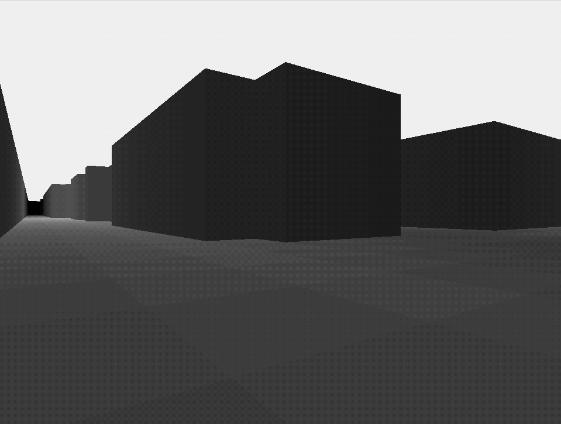

Current Project Current Project
Current Project Current ProjectDistance Illumination - coloring or illuminating a scene according to distance to objects within it. Here are some examples of the technique in action.
Currently I am experimenting with incorporating the technique with game lighting. Here's an example in Ninja Escape, a game made in coordination with undergraduates as part of the senior capstone on game design.
 Back to the front page
Back to the front page